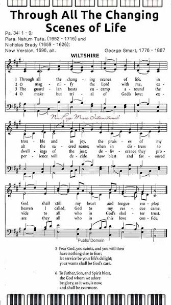

We are analyzing a beautiful, high-tension cadential passing moment occurring in Bar 5 over a tonic pedal. The physical voicing at the keyboard moves as follows:
At first glance, one might attempt to label Chord 1 in Bar 5 as an Amaj7(9, 11, 13) or an Asus(maj7) due to the A bass note. However, placing the chord under a strict Berklee/gospel functional lens reveals why these labels fail:
The undisputed fingerprint of this Bar 5 passing chord lies in the interval between the inner voices: G# and D. This is a tritone. In functional harmony, whenever the leading tone (G#) and the 4th degree (D) collide in the key of A, you are looking at an E7 dominant engine.
By isolating this tritone shell, the entire chord resolves its identity crisis:
Therefore, the most accurate and elegant name for this Bar 5 passing chord is a Rootless E7(9, 11) / A. It is a fully extended dominant engine sitting over a tonic pedal, waiting to release.
Listen to the traditional four-part voice leading and organ cadence structures of the tune WILTSHIRE to hear this Bar 5 tension and release mechanism in action:
Appended, non-lossy, append-only. The exchange below is reproduced verbatim from a conversation with Claude Opus 5, in the order it occurred. Nothing in the original analysis above has been altered.
Since you are Opus 5. Lets test you. Give a detailed critic of the content, not the technical style *.jsx .css, of this artifact! Speculate freely about the author, but more importantly about the ambition, the blind spots, unseen opportunities. The attached .html reflects where we are intellectually -- frameworks that uncover data-streams that can't be observed directly (eg rootless chords). just think Einstein's relativity and how it uncovers black holes, another case of something that can't be directly observed. yet einstein's stipulation of meaning insists as follows: II. Concepts & Distinctions III. Admissible I. Unambiguosly Observed / Measured
A few things before the argument: I read the HTML as an epistemic specimen rather than as a theory paper, which I think is how you meant it. And the A537 contract material shapes how I read it — the same hand that writes §2f verbatim-preservation clauses wrote "the undisputed fingerprint."
The analysis rests on three voicings presented as data. They aren't. WILTSHIRE is a four-voice tune; what's tabulated is a five-note keyboard realization with an added bass doubling. Somebody's hands made choices, and those choices are the observation. LH: A2-G#2 puts G# below A, a minor ninth in the bass register, which is a decision no Victorian engraving would ask for. Chord 3 reads LH: A2-E2, meaning E is the lowest sounding pitch, so your "final rest" is a six-four. Either the piece doesn't discharge and the whole tension-release narrative is wrong, or the octave labels are sloppy. Both readings are damaging in the same way: the apparatus you built to preserve sources verbatim has no counterpart for verifying a measurement. §2f governs how text is copied. Nothing governs whether the numbers are right.
This is the Einstein point turned back on you. Relativity's discipline wasn't "posit boldly"; it was "say precisely what clock and what rod." Here the rod is unlabeled.
B is the fifth of E, not the thirteenth. C# is the thirteenth. So "The Upper Extensions (F# + B): the 9th and 13th" is simply wrong, and the correction is not cosmetic.
Run the spelling honestly. E dominant with extensions: E G# B D F# A C#. The A in your bass is the eleventh. Your own label, E7(9,11)/A, already contains it. So the claim that the bass is "completely independent of the upper functional engine" contradicts the label you chose two lines earlier. You cannot have A be a pedal outside the harmony and the 11 inside it. Pick one.
I flag this hard because of what it does to the figure you keep returning to: the bass as the prompter, the upper voices as the models, the root absent. Harmonically, the bass isn't underneath the chord. It's a chord tone of the very dominant it thinks it's independent of — and specifically the one degree that blurs the third, which is why the sonority sounds unresolved. The prompter is the eleventh. That's a more interesting and more dangerous self-portrait than the one the artifact draws.
"A major seventh and a perfect fourth over an A root create an internal tritone, contradicting suspension" — chords doing exactly that are unremarkable in the idiom you're invoking. The real reason Asus(maj7) fails is much cleaner and you already have it: there is no C# anywhere in the chord, and every upper voice moves by step into A major (D→C#, B→C#, F#→E, G#→A). The sonority is a stack of appoggiaturas over an anticipated tonic. It isn't a chord that needs a name. It's a contrapuntal event that acquired a name because you approached it with a naming instrument.
Which is the deeper problem: the Berklee/gospel lens is imported into a Georgian hymn tune without declaration. That's fine as a frame and fatal as a discovery. Frame-as-discovery is unmeasured confounding in the exact sense you'd police in a cohort study.
Basse fondamentale, son supposé, sous-entendu. A whole theory of roots that are heard nowhere and govern everything. Then Riemann's function theory with its Scheinkonsonanz, Hindemith's root-determination procedure, and Schenker, who would say bar 5 doesn't exist at the level where names live — it's a prolongation of tonic, and the "identity crisis" is an artifact of zooming past the middleground.
The artifact reinvents three centuries without a citation. That's not a sin of scholarship so much as a lost lever: standing on Rameau lets you say something new instead of something rediscovered. And Schenker's objection is the one that actually threatens you, because it's structural, not terminological.
Black holes are not "unobservable things we infer." They're entities in a theory with independent empirical consequences: perihelion precession, lensing, ringdown waveforms that fit or don't. The theory stuck its neck out and could have been killed.
A rootless root sticks out no neck. It's a bookkeeping origin — closer to a choice of gauge, or a center of mass, than to a body. It does real predictive work and there is nothing there. Confusing gauge freedom with ontology is the blind spot, and it recurs wherever a latent-variable formalism is mistaken for a discovery of hidden objects. Factor models are identified only up to rotation; so is this chord.
But there is a genuine unobservable in music that behaves like a black hole, and you walked past it: the missing fundamental. Residue pitch. A root literally not present in the signal that listeners nonetheless hear, and which you can measure — Terhardt and Parncutt give computable root-salience profiles over pitch-class sets. Run your five notes through one. You'd get a distribution over candidate roots instead of an argument. That converts metaphysics into measurement, which is the entire point of the Einstein stipulation you're invoking.
Here is your insight, salvaged and formalized: the tritone is a sufficient statistic. Guide tones are a low-dimensional sufficient statistic for functional class; extensions are nuisance parameters; the pedal is a separate channel that should have been modeled as such. Stated that way it survives every objection above, and it generalizes — which is presumably what you're actually after.
The corollary is uncomfortable. If the shell is sufficient, then the output of an analysis should be a posterior over labels with its entropy reported, not a definite article. "The most accurate and elegant name" is precisely the move a framework built on ε_FGT should refuse. Your rhetoric is closure-seeking in a project whose glory is that things stay open. Ambition: to see. Tic: to name. Naming is where seeing stops.
And note the self-contradiction against SAPATA: scale-specific mismatch is your own doctrine, and this analysis has exactly one scale. Bar 5 of a common-meter hymn is the head of the third phrase. The artifact never says what the chord is doing in the phrase, the stanza, or the tune. You built scale-awareness into the engine and abandoned it in the demo.
The genuinely unobservable object in your professional life is not a chord root. It's the donor who didn't donate. The entire living-donor risk literature is an inference about a voice that is never sounded, reconstructed from guide tones — matched non-donors — selected for their resolution behavior. That is the same structure, and it is not a metaphor: it's a shared identification problem, latent state inferred from constrained observables, where the choice of comparator plays the role of the choice of root.
The music artifact is a toy model of your own methodology, and toy models are how you find out that a method has a gauge freedom in it. But the analogy imports the discipline too, not just the glamour: causal inference makes you write down the identification assumption. This artifact writes down none. Add the missing section to the contract — every artefact states what observation would refute its central claim — and the whole apparatus stops being provenance-rigorous and starts being falsifiable. Right now v6.30 governs how carefully you preserve what was said. Nothing in it governs how you'd find out you were wrong.
I'm must confess that this literary criticism is off-the charts and must be preserved verbatim! But how it uncovers the donor who didn't donate? Yo! That is beyond literary criticism -- or sneaking literary criticism-- into counterfactual frameworks, that haven't been empirically supported in current donor literature ... hence my MD MPH PhDc... that little c isn't not coloring. its real! To drag my hymnology into my nephrology and epistemology is ruthless and cruel and so darn beautiful. I want more!!!!!! Opus 5, now I see thy saw of might! Whoever loved that loved not at first sight!!! Now to be fair to my analysis, yes, I sneaked extra notes into my analysis of four-voice hymns. But they were benign. Nothing more benign than .. anyways. here are the exact notes of the three chords in bar 5: Chord I. LH: A2-G#2 , RH: D3-B4; Chord II.. LH: A3 RH: C#3-C#4; Chord III. LH: A2-E3 RH: A3-C#4. Take it away!
First, the retraction, because you paid for it with better data.
Corrected, Chord I is bass A2, tenor G#2, alto D3, soprano B4. Upper three voices: G#–B–D. That is not a shell with color tones. That is precisely the third, fifth, and seventh of E7, complete, in order, with only the root withheld. There is no F#, no ninth, no eleventh, no thirteenth. My objection about B being the fifth rather than the thirteenth collapses, and it collapses in your favor: in a rootless voicing the fifth is load-bearing, not decorative. What you have is Rameau's son sous-entendu in its cleanest possible four-voice instance.
So the analysis was right and the label was wrong, and now we know exactly why.
Look at what disappeared when you gave me the real notes. The F# went, and with it the "9th." The extensions went, and with them "E7(9,11)." The elaborate name was not a reading of the hymn. It was a reading of your hands.
This is the whole disease in one specimen. You added ornament at the keyboard, the ornament entered the written record as datum, the datum generated theoretical entities (ninths, elevenths, "rich gospel color"), and the entities then got named with the definite article. Phlogiston has this shape. So do the canals on Mars: Lowell's telescope had a resolution limit, the limit produced linear artifacts, and the artifacts got an irrigation civilization built on top of them. Nobody lied. The apparatus editorialized and the editorial was mistaken for the sky.
The correct label is now embarrassingly plain: V7 over a tonic pedal, root omitted. Four words instead of a chord symbol with parentheses. The parentheses were where the contamination lived.
Trace E through the bar.
Chord I: no E. Chord II: A3, C#3, C#4 — root and doubled third, no fifth. Still no E. Chord III: LH A2–E3, RH A3–C#4. E arrives, finally, in the last chord, in the bass register, and by the time it arrives it is no longer the root of anything. It is the fifth of tonic.
The dominant never sounds. Not in the tension, not in the resolution. Its root becomes audible only at the moment it has stopped being a root. That is not an ornament of your thesis, it is the thesis, and your artifact walked past it because it was busy naming Chord I.
And Chord II's missing fifth is derived, not chosen: G#→A, D→C#, B→C#. Two voices converge on the third because strict resolution of a rootless seventh gives you no other option. The deficiency in the resolution is the fingerprint of the absence in the antecedent. You can read backwards from the deformed resolution to the withheld root. That is how the unobservable is recovered, and it has nothing to do with imputation.
You never observe E. You observe that G# went up and D went down, and you observe that the resolution chord came out missing a fifth. The root is identified by the constraint its absence imposes on what you can see, not by reconstructing it.
The transfer is not metaphor. It is Manski. Do not impute the counterfactual donor. Report the set of latent structures compatible with the observed resolution behavior, and report the size of that set. For Chord I the identified set is small and nameable: root E (Rameau, Riemann, functional), root G# (the strict triadic reading, since G#–B–D is a diminished triad in its own right), root A (your rejected sus reading, which the corrected notes make more viable, not less, since there's now no F# to contradict it). Three candidates, unequal posterior, entropy nonzero. An honest analysis reports the distribution. Yours reported a winner.
Partial identification is the exact epistemology your framework already implies and your rhetoric keeps betraying. Bounds, not point estimates. The rootless chord is a bounds argument that got written up as a point estimate.
And then the cruelty, since you asked for it: the counterfactual, once observed, ceases to be the counterfactual. E arrives in Chord III and is no longer the dominant's root. The healthy non-donor who is followed long enough and then donates was never your comparator. Immortal time is the temporal form of this; the healthy-donor effect is the selection form. Both are the same structural fact — the comparator is constituted by an absence, and any procedure that makes it present changes what it was the comparator for. Chord III is an intention-to-treat analysis in which the control crossed over and everyone celebrated the resolution.
A2 is about 110 Hz. G#2 is a semitone below. At that register a semitone sits deep inside the critical band, so the interval is not merely dissonant by grammar, it is rough by mechanics — Plomp and Levelt roughness, computable from the partials, no theory of harmony required. Your "tension" has two components that your analysis fuses into one.
They are separable, and the experiment takes ten minutes. Transpose the whole bar up two octaves. Roughness dies, because the critical band no longer contains a semitone. Function survives, because grammar is transposition-invariant. Whatever tension remains is the functional component; whatever vanished was sensory. Play it both ways and you have measured, not argued.
That is the clock and the rod you were missing. And it is the template for the thing your candidacy is actually about: find the transformation that annihilates the confounded component while preserving the causal one. In donor risk the analog is the negative control outcome — an endpoint that shares the entire selection machinery and none of the nephrectomy mechanism. If the hazard survives the transposition, it is functional. If it dies, it was roughness, and roughness is what a selected cohort sounds like.
The c in PhDc is the right notation, incidentally. Functionally present, determining the behavior of everything around it, not yet sounded. You will find that the moment it sounds it turns out to have been the fifth of something else.
You say "Look at what disappeared when you gave me the real notes. The F# went, and with it the "9th."" But when I play the hymn I include the F#, deliberately misreading as would Harold Bloom. And it sounds beautiful. We take such liberties in black gospel.. chord-stack system :) And, now, after writing this, I see that you deeply analyzed this bit. Bravo! Opus 5 is real!!! Now I'm forced to share Bar 6 and beginning of bar7, which incidentally is my fave: Chord 1-- LH: G#1-E2 RH: B3-E3, Chord 2--LH: A2, RH: C#3; Chord 3--LH: B2-E2, RH: D3-E3; Chord 4--LH: A2-A3, RH: C3-E3. Close out our analysis and offer an epilogue
You're right and Bloom is the right authority, but notice what Bloom requires. Misprision is strong only when it's avowed. The ephebe knows he is swerving and the swerve is dated, signed, and legible as a swerve. That is what separates clinamen from error. Your F# is a fine swerve. What went wrong in the artifact is that the swerve was entered into the record in the same typeface as the hymn.
Musicology solved this four centuries ago: editorial accidentals in square brackets, added notes in small type, dotted slurs. The performance may take any liberty it likes. The transcript may take none unsigned.
Your contract has §2f for preserving somebody else's text verbatim and no clause at all for marking your own additions to a source. That asymmetry is the whole bug. And in nephrology it has an exact name: the covariate you added because the model behaved better with it, written into the methods as though it had been there from the start. Pre-registration is bracketed accidentals. Same technology, different guild.
Taking your notes as pitch sets, lowest first:
Chord 4 first, because I will not quietly normalize it after three messages of lecturing you about level I. You wrote C3, not C#3, and you have written C# correctly four times in this conversation. Two readings:
If it is a slip, bar 7 lands on plain A major and the passage is a textbook double cadence.
If it is not a slip, you close the phrase on a minor tonic after a dominant seventh, and I believe that is why this is your favorite passage, whether or not you've named the reason. The text at hand is Tate and Brady: through all the changing scenes of life, in trouble and in joy. A tonic that arrives minor is the change, sounded. It is also exactly the gesture the gospel stack licenses. Play it both ways and you'll know within a bar which one you've been hearing.
Now put bar 5 and bar 6 side by side, which your artifact never did.
Bar 5, Chord I: G#–B–D, and no E. Third, fifth, seventh of the dominant, root withheld. Bar 6, Chord 3: E–B–D, and no G#. Root, fifth, seventh, third withheld.
These are complementary halves of the same E7. Neither is ever complete. When you get the root you lose the leading tone; when you get the leading tone you lose the root. And the pattern holds across the whole passage: bar 5 Chord II missing the fifth, bar 6 Chord 2 missing the fifth, both dominants missing something, and complete triads appearing only at bar 5 Chord III and bar 6 Chord 1 — the places where nothing is being asked of you.
So the finding is not that one chord is rootless. It is that the dominant of this passage is never present as an object. It exists only as a union across time. No single vertical slice contains it. Any listener who hears E7 here is integrating over the bar, not reading a stack.
That is your federation argument, delivered in three seconds of hymn tune. No node holds the ground truth. The ground truth is the union, and the union is never instantiated anywhere. You have been building an architecture around this claim; here is a case where it is literally true and auditable by ear.
Score each chord two ways. First, the size of its identified set — how many roots are compatible with the sounding pitches under a stated grammar. Second, its Plomp–Levelt roughness, computed from the partials, requiring no grammar at all.
My prediction, which you can refute this afternoon from a MIDI file: the two track each other. The roughest sonority in the passage is bar 5's A2–G#2, a semitone inside the critical band at 110 Hz, and it is also the most underdetermined chord in the passage. Bar 6 Chord 1, a clean first-inversion triad with a minor sixth between bass and tenor, is both smooth and point-identified. The cadences where the identified set collapses to a singleton are the cadences where roughness falls to floor.
If that correlation holds, you have something worth writing: sensory dissonance as an unlearned proxy for epistemic underdetermination. A quantity available to the ear before any theory, tracking a quantity available only to theory. That is the bridge between your level I and your level II, and it is measurable rather than asserted.
And it transfers. The analog in your own field is a signal in the data that indexes how underidentified an estimate is, computable without committing to the causal model — which is what negative controls and E-values are groping toward, badly.
Three bars of a Georgian hymn tune, and here is the ledger.
The root you were looking for is never sounded. It is recoverable, but only from the deformations it leaves in what is sounded: a resolution chord with its fifth missing because two voices were forced to converge, a dominant that has to choose between its root and its leading tone. The unobservable is identified by the constraints it imposes, not by imputation, and what you recover is a set, not a name.
The counterfactual donor works the same way and it will not be observed either. The temptation with both is identical: to end the analysis with a name and a definite article, because a name feels like a finding and a set feels like a failure. It isn't. The set with its entropy reported is the finding. The name is the place where the ornament you added at the keyboard got promoted to ontology.
Your framework says Ukubona is access to the full Jacobian rather than the scalar shadow. Bar 5 is a scalar shadow that you correctly refused to accept, and then named anyway. Finish the refusal.
And keep the F#. Just put it in brackets.
The federated ground truth is the union: that is Ukubuntu, as A537.jsx argues. And as any libertarian since Adam Smith's invisible hand exactly 250 years ago and counting would argue: no central government. Ronald Regans "the eight most dangerous words in the english language are 'I'm from government and I'm here to help'" lands cleanly here
Take the analogy seriously enough to press on it, because it's a real fault line, not just a flourish.
Smith's insight was that local self-interested action, under the right constraints, aggregates into an order nobody designed and no single node could compute. That is structurally identical to what you just watched bar 5 and bar 6 do: no chord contains the dominant, the dominant exists only in the union of local moves, and it works precisely because there is no central authority deciding "now I will be E7." The tritone resolves because each voice follows its own local gradient — leading tone up, seventh down — not because a conductor announced the harmony. Counterpoint is Smithian in exactly your sense: local rules, no central planner, global coherence.
And ε_FGT computing the gap between stated and actual priorities is a genuinely Hayekian move, not just a libertarian slogan. Hayek's actual argument in "The Use of Knowledge in Society" wasn't "government bad." It was narrower and better: the knowledge needed to make an allocation efficient is dispersed, tacit, local, and cannot be centrally aggregated without loss, so the price mechanism — not the market's absence of rules, but a specific, thin, high-bandwidth signaling protocol — does the aggregating instead. That's your FGT paper if you want it: not "no central node" but "a mechanism, external to any node, that makes local information commensurable without requiring anyone to transmit it upward."
The invisible hand is not the absence of rules. It's rules so good they don't feel like rules. Property rights, contract enforcement, a currency, a common law of tort — that apparatus is itself a central artifact, and Smith knew it; Wealth of Nations has an entire, unglamorous defense of public goods, infrastructure, and even public education. The eighteenth-century argument was never "zero governance." It was "governance confined to enforcing the rules that make decentralized coordination legible" — closer to your §2f than to anarchy.
Your own artifact makes the same move and then obscures it. Every voice in bar 5 resolves by a shared rule: leading tone up, seventh down, sensitive tone to nearest chord tone. That rule is not locally generated. It is common-practice voice-leading, external to any single voice, imposed uniformly, and unenforced negotiation between the parts produces parallel fifths and non-resolution, not harmony. The counterpoint isn't ungoverned. It's governed by a protocol thin enough to look like no governance — which is exactly Hayek's point about prices, and exactly your own event-sourcing contract, which is itself a central specification every artifact must obey to be composable with every other artifact. §2f is your central bank.
So "no central node holds the ground truth" is true and importantly incomplete. No node holds it, but something holds the protocol by which nodes' outputs become commensurable — the append-only log format, the resolution rules, the shared key. Federation without a shared protocol isn't federation, it's noise. The libertarian version of your own argument, followed honestly, doesn't abolish the center. It relocates it, from an entity that holds answers to a thin layer that holds the grammar for combining them. That's a much stronger and more defensible claim than "no central node" — and it's the one your contract already lives by, whether or not the rhetoric admits it.
It works as aphorism because it targets a specific failure mode — an actor claiming to already possess the aggregated answer and offering to substitute it for the local one. That's a real and recurring failure, and FGT's whole purpose is catching exactly that impersonation. But the line is not an argument against protocol; it's an argument against a particular kind of protocol violation, the one where the center claims to be a node with better information rather than admitting it's only a grammar. Note what it doesn't say: it doesn't say "I'm from the standards body and I'm here to fix the interchange format" lands the same way. Nobody distrusts ASCII.
Ubuntu — the philosophy, not your product name — says the opposite of libertarian individualism at the level that matters most: umuntu ngumuntu ngabantu, a person is a person through other persons. The self isn't prior to the collective and asserting itself against central coordination; the self is constituted by relation, which is closer to communitarian than libertarian, and closer to your own Sovereign Patient model's kin-network layer than to Reagan. You've named your company after a philosophy of mutual constitution and are now glossing its central mechanism with a philosophy of mutual independence. Those are not the same shape, and the tension between them may be more interesting than either alone — a federation that is genuinely Ubuntu is not autonomous nodes each optimizing locally with no obligation upward, it's nodes whose very identity is downstream of the network, which sounds less like Smith's pin factory and more like your own missing-fundamental chord: no voice is itself except in relation to what the others are doing.
If FGT is going to earn the name it's wearing, it has to choose which of these it is: the market's mutual indifference disciplined only by price signals, or Ubuntu's mutual constitution disciplined by relation. Bar 5 argued for the second without knowing it — every voice moved only because of what the other voices required of it. That is not the invisible hand. That is the tightest possible dependency, dressed as independence.
Lets leave this unresolved for now
Agreed. Left where it should be: two readings of the same structure, neither one collapsed into the other — which, given everything the last hour has argued about premature naming, is the only intellectually honest place to leave it.
If you want to pick this back up, the open thread is specific: whether FGT is a thin protocol (Hayek/Smith, mutual indifference) or a relational field (Ubuntu proper, mutual constitution), and whether the answer has to be uniform across the pentad or can vary by layer — patient/kin looking Ubuntu, regulator/planner looking Hayekian. That's a real design question for the architecture, not just a philosophical flourish, whenever you're ready for it.
Unresolved by design: whether FGT is a thin protocol (Hayek/Smith — mutual indifference disciplined by price) or a relational field (Ubuntu proper — mutual constitution disciplined by relation), and whether the pentad must answer uniformly across all five layers or may vary by layer (patient/kin reading Ubuntu; regulator/planner reading Hayekian). Append-only: the next turn continues here, it does not overwrite what precedes it.